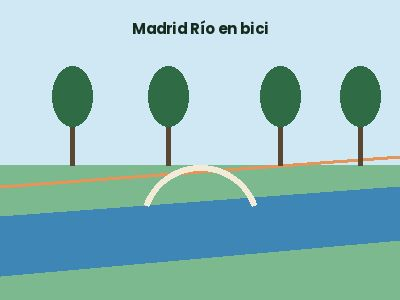

Mis consejos para hacer la ruta
Sal por la mañana temprano, cuando hay menos gente en el carril bici. Lleva agua y casco, y respeta a los peatones en las zonas compartidas. Si vas con niños, el tramo 2 es el más tranquilo para parar a descansar.
Rutas de Héctor
Una ruta fácil y llana junto al río Manzanares, ideal para hacerla en familia o para empezar a montar en bici por la ciudad.

| Tramo | Recorrido | Distancia | Tiempo en bici |
|---|---|---|---|
| 1 | Puente del Rey → Puente de Segovia | 1 km | 5 min |
| 2 | Puente de Segovia → Puente de Toledo | 2 km | 10 min |
| 3 | Puente de Toledo → Matadero Madrid | 1,5 km | 8 min |
| Total | Puente del Rey → Matadero Madrid | 4,5 km | 23 min |
Sal por la mañana temprano, cuando hay menos gente en el carril bici. Lleva agua y casco, y respeta a los peatones en las zonas compartidas. Si vas con niños, el tramo 2 es el más tranquilo para parar a descansar.